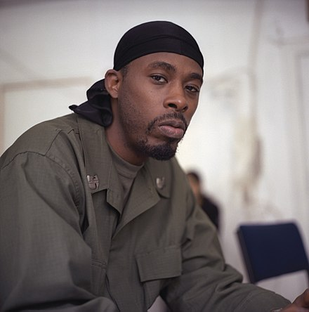
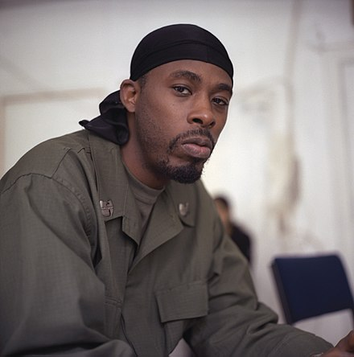
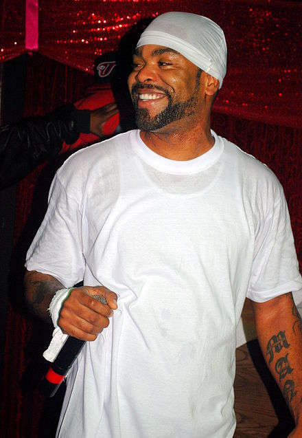

GZA
Gary Earl Grice
We love to rap
Wu-Tang Clan is an American hip hop group formed on Staten Island, New York City, in 1992. Its original members include RZA, GZA, Ol' Dirty Bastard, Method Man, Raekwon, Ghostface Killah, Inspectah Deck, U-God, and Masta Killa. Close affiliate Cappadonna later became an official member. Wu-Tang Clan are regarded as a highly influential group in hip hop, helping to popularize and develop the East Coast hip hop and hardcore hip hop styles.
GZA
Gary Earl Grice
Method Man
Clifford Smith Jr.
Ol' Dirty Bastard
Russell Tyrone Jones